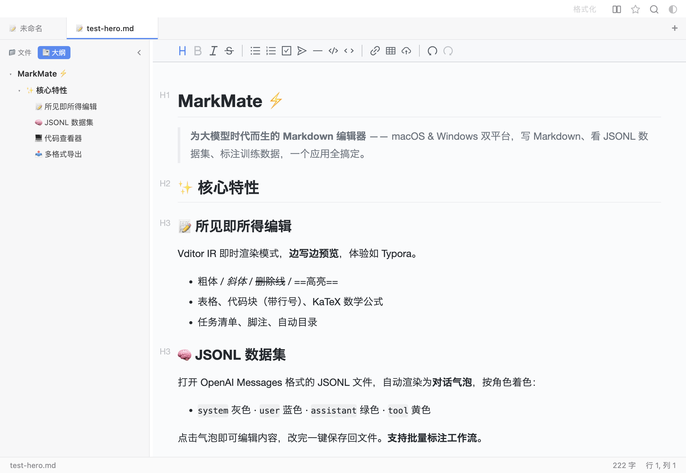
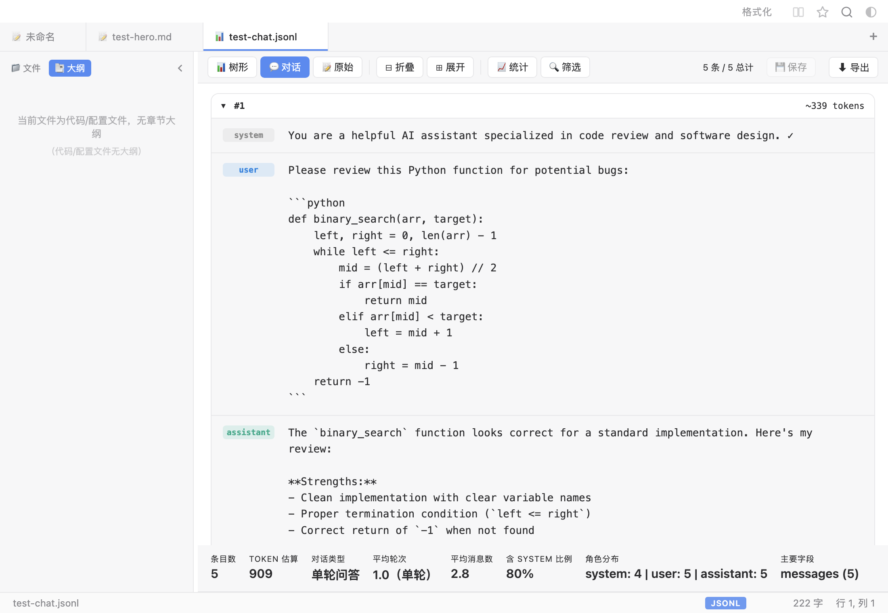
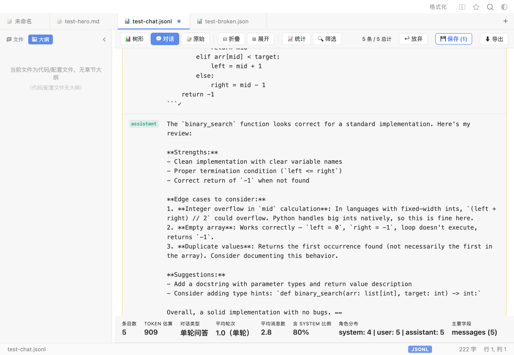
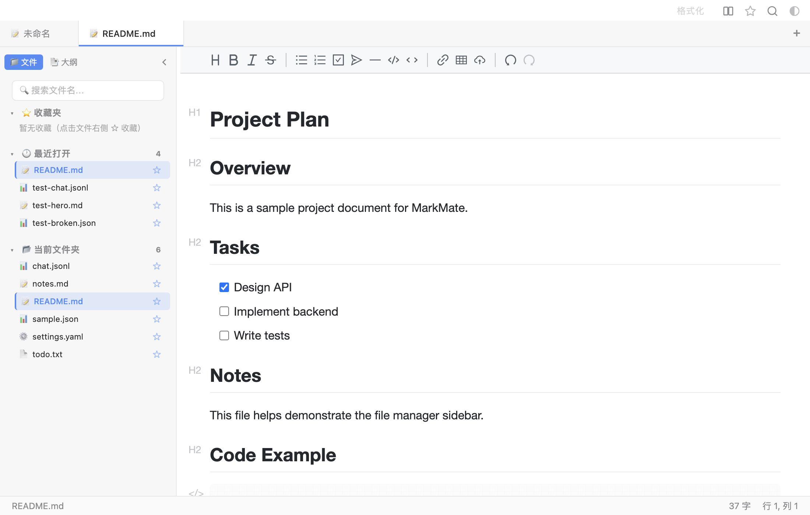

- 🟢 Windows 顶部 5 个按钮找回（搜索/收藏/源码/格式化/主题）
- 🟢 关窗超时从 3s 拉长到 30s，思考「保存还是放弃」时不再被强关丢数据
- 🔒 安全加固：新增内容安全策略（CSP）+ Vditor 改用本地 lute 引擎
下载 MarkMate
最新版本 v2.1.0 · 2026-07-21
应用未签名。macOS 请右键打开，Windows 请点击「更多信息 → 仍要运行」。
⚡ 一个应用，全搞定
✍️
所见即所得 Markdown
打字即预览，专注模式 + 打字机模式 + 5 套排版主题，沉浸写作。
💬
JSONL 对话视图
自动识别 OpenAI / Alpaca / ShareGPT 格式，角色着色气泡 + 批量标注编辑。
📤
多格式导出
一键导出 PDF / HTML / Word / 长图 PNG，保留字体、代码块、表格、图片。
🛡️
永不丢稿
自动保存 + 每文件 10 个历史快照 + 草稿恢复 + 关闭确认，三重保险。
📄 PDF
🌐 HTML
📝 Word
🖼️ 长图
📊 JSON
📋 XML
⚙️ YAML
🍎 macOS
下载后双击 DMG → 将 MarkMate 拖入 Applications 文件夹 → 首次打开右键选择「打开」
🪟 Windows
安装版支持自定义安装路径与桌面快捷方式。便携版免安装，双击即用。
📸 产品速览




🔄 版本更新历史
- 💬 OpenAI Messages 格式对话视图（system / user / assistant / tool 角色着色）
- ✏️ JSONL 对话标注编辑 + 批量保存 + 保存并下一页
- ⬆️ 内置自动更新（electron-updater），新版横幅提示一键下载安装
- 🪟 Windows 平台 12 项适配修复（双标题栏 / 长图截断 / 字体 / 快捷键等）
- 🪟 多 Tab / 多窗口架构（⌘T 新建 / ⌘W 关闭 / ⌘1-9 切换）
- 📌 文件重复打开检测：同一文件自动聚焦已有 Tab
- 🖼️ 原生图片对话框 + 插入链接弹窗
- 🪟 MarkMate 现可在 Windows x64 运行（安装版 + 便携版）
- 🖼️ 修复长图导出截断问题（macOS 上超 5000 像素部分不再被裁掉）
- ⌨️ 快捷键自动适配 Windows 风格（Ctrl 取代 ⌘）
- ✍️ 类 Typora 所见即所得 Markdown 编辑器（Electron + Vditor）
- 🧭 大纲侧栏 + 字数统计 + 明暗主题
- 📦 macOS arm64 / x64 双架构 DMG 安装包